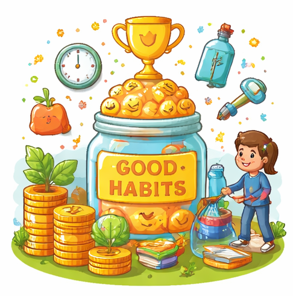

چھوٹی چھوٹی اچھی عادتیں ہی انسان کو بڑا انسان بناتی ہیں: کردار سازی کا سفر

عظمت صرف بڑے کاموں سے نہیں آتی، بلکہ وہ ان چھوٹے چھوٹے اعمال کا نتیجہ ہوتی ہے جو ہم روزانہ خاموشی سے کرتے ہیں۔ "چھوٹی چھوٹی اچھی عادتیں ہی انسان کو بڑا انسان بناتی ہیں"—یہ جملہ صرف ایک ضرب المثل نہیں، بلکہ حقیقتِ زندگی کا نچوڑ ہے۔ اسلام میں اسی نظم وضبط کا نام "استقامت" ہے۔ جو شخص اپنی چھوٹی نیکیوں پر جما رہتا ہے، وہی بالآخر بڑے اہداف حاصل کرتا ہے۔ حقیقی کامیابی اسی شخص کے قدم چومتی ہے جو اپنے وقت اور عادات کی قدر کرنا جانتا ہے۔
1. عادت اور کردار کا گہرا تعلق
انسان کی پہچان اس کے بڑے عہدے یا دولت سے نہیں ہوتی، بلکہ اس کی عادات سے ہوتی ہے۔ ایک چھوٹی سی اچھی عادت، جیسے وقت کی پابندی کرنا، پورے دن کے نظام کو بدل سکتی ہے۔ جانیے کیسے وقت کو سنبھالنا آپ کی زندگی میں معجزات برپا کر سکتا ہے۔ جب ایک مسلمان فجر کی پابندی کو اپنی عادت بنا لیتا ہے، تو اس کا دن کا آغاز برکت سے ہوتا ہے اور اس کا اثر اس کے ہر کام پر پڑتا ہے۔ اسی طرح، مسلسل روزانہ تلاوتِ قرآن آپ کے قلب و دماغ کو نئی توانائی بخشتی ہے۔
بچوں کے لیے یہ عادتیں ان کی شخصیت کی بنیاد بنتی ہیں۔ بچوں کی اسلامی تربیت کا حسن یہی ہے کہ وہ چھوٹی عمر ہی سے نظم و ضبط اور نیکی کی طرف راغب ہوں۔ جب انہیں صبر اور دعا کا ہنر سکھایا جاتا ہے، تو وہ مستقبل کی بڑی آزمائشوں کے لیے ابھی سے تیار ہو رہے ہوتے ہیں۔ ہمارا مقصد ان میں وہ عادات پیدا کرنا ہے جو انہیں ایک صابر اور شاکر مسلمان بنائیں۔
2. علم اور عمل کا حسین امتزاج
عادتوں کو بدلنے کے لیے صحیح علم اور رہنمائی کی ضرورت ہوتی ہے۔ آن لائن قرآن سیکھنے کے فوائد کا فائدہ اٹھاتے ہوئے آپ بہت کم وقت میں دین کے ساتھ گہرا رشتہ جوڑ سکتے ہیں۔ قرآن کی اصل اہمیت تب ہی واضح ہوتی ہے جب اسے روزانہ کے معمول میں شامل کیا جائے۔ بچوں کے لیے سیکھنے کی بہترین عمر فجر کے بعد کے لمحات ہیں جہاں ان کا حافظہ سب سے زیادہ قوی ہوتا ہے۔ حفظ کرنے کے فوائد اور تجوید کی ضرورت کو سمجھنا آپ کے کردار کو نکھارنے کا پہلا قدم ہے۔
سعید قرآن اکیڈمی: کردار سازی میں آپ کا شریک
ہماری اکیڈمی میں تعلیم صرف حروف کی ادائیگی کا نام نہیں، بلکہ یہ ایک مکمل نظامِ زندگی ہے۔ ہم اپنے طلباء کو وہ ماحول فراہم کرتے ہیں جہاں وہ قرآن کی روشنی میں اپنی عادات کو سنوار سکتے ہیں۔ چاہے وہ دنیا کے کسی بھی کونے میں ہوں، ہماری 1-on-1 کلاسز انہیں وہ انفرادی توجہ فراہم کرتی ہیں جو ان کی شخصیت کو دوسروں سے ممتاز کر دیتی ہیں۔
اختتام: سفر آج سے شروع کریں
بڑا انسان بننے کے لیے آج سے کچھ چھوٹا کرنے کا عہد کریں۔ روزانہ تلاوت کا ایک صفحہ، ایک چھوٹی سی دعا، یا کسی کے لیے مسکراہٹ—یہی وہ بنیادیں ہیں جو آپ کی شخصیت کی عظمت کی عمارت کھڑی کریں گی۔ چھوٹی چھوٹی اچھی عادتیں ہی انسان کو بڑا انسان بناتی ہیں۔ تو کیا آپ تیار ہیں اس عظیم سفر کے لیے؟
نیکی کا پہلا قدم اٹھائیں!
سعید قرآن اکیڈمی کے ساتھ اپنی عادات کو سنواریں۔ ابھی فری ٹرائل کلاس کے لیے رابطہ کریں۔